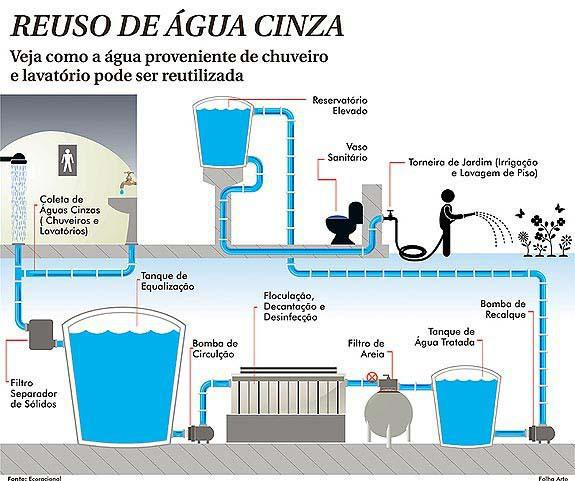
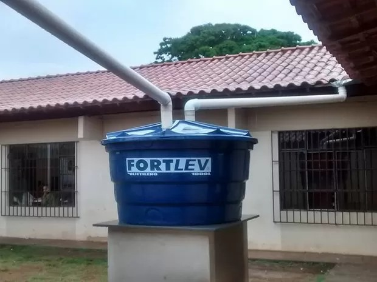
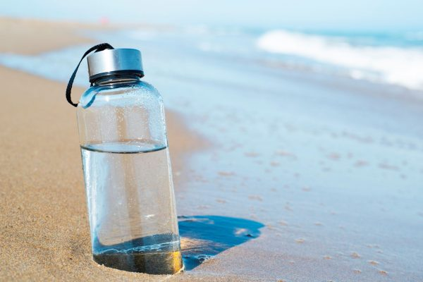

Certamente! Projetos de reciclagem de água são fundamentais para a preservação dos recursos hídricos e a sustentabilidade ambiental.
E aqui traremos alguns exemplos de projetos bem-sucedidos nessa área:
O Reuso de Águas em Moradias Populares foi voltado para a ampliação do acesso à água em Caruaru, cidade marcada pela escassez hídrica. Assim, o grupo de pesquisa da UFPE se dedicou a desenvolver tecnologias simples e com baixo custo. Essas medidas trouxeram soluções que melhoraram as condições de saneamento e saúde da população. Paralelamente, a Viana & Moura Construções, por ter a cultura da cooperação e a missão de contribuir com a felicidade das pessoas, entregando vilas encantadoras e sustentáveis, financiou a iniciativa por desenvolver construções acessíveis às populações carentes. “A experiência da UFPE somada ao conhecimento técnico da nossa equipe gerou um impacto positivo ofertando água com qualidade para as pessoas”, pontuou Whilma Lacerda, Gerente de Sustentabilidade da Viana & Moura.
É um projeto simples e eficiente que consiste em captar e armazenar a água da chuva para diversos fins, como irrigação de jardins, limpeza de áreas externas e até mesmo uso em descargas sanitárias.
A proposta da Escola Estadual Joaquim Afonso Rodrigues , envolveu o vice-diretor, que elaborou o sistema, e auxiliares de serviços gerais. "Levamos em média uns 15 dias para finalizar, é um projeto simples composto por uma caixa-dágua que capta água da chuva que cai das calhas do telhado e armazena", contou o auxiliar de serviços gerais, Ronaldo André.
O pouco dinheiro investido foi da verba da manutenção da escola. Montado em julho, durante as férias dos alunos, o projeto só foi inaugurado nessa semana após as chuvas na região. "Ficamos na expectativa de chover para experimentar o projeto e essa semana choveu e ficamos muito felizes em ver o reservatório cheio. A água agora está sendo usada para lavar o pátio, banheiro, molhar as plantas. É importante ressaltar que tomamos o cuidado de vedar a caixa d'agua para evitar a dengue e que esse cuidado deve ser tomado nas casas que forem fazer o aproveitamento", contou Júnia.

Pelos cálculos da Casan (Companhia Catarinense de Águas e Saneamento), uma família de cinco pessoas consome em média mil litros de água por dia. E na maioria das casas todo esse volume é de água tratada. Para o jardim, para lavar roupas, ou para o vaso sanitário é só aproveitar o que vem do céu.
A casa eficiente, construída pela Eletrosul em parceria com a UFSC (Universidade Federal de Santa Catarina), apresenta várias soluções para o uso racional de energia elétrica e água. A captação da água da chuva é uma delas.
O local conta com duas tubulações, uma de água potável e outra da água que vem do céu. A água é captada diretamente do telhado e direcionada para o tanque, máquina de levar a vaso sanitário.
Além de utilizar a água da chuva, os efluentes da pia da cozinha e do vaso sanitário são separados dos demais. Isso permite que as águas cinzas claras que vem do tanque e do chuveiro sejam tratadas por um filtro natural e utilizados para a irrigação do jardim.
Mais de 100 mil pessoas já visitaram a casa virtualmente pela internet. E outras dezenas de milhares vieram até o local para conferir de perto a tecnologia usada.
Para o coordenador administrativo do Campus São Borja, Luís André Padilha, desde a instalação desse sistema, o consumo de água potável no campus é mínimo: “é para chimarrão e para tomar água. O resto [da utilização] é com a água coletada da chuva”, destaca. A água da chuva, armazenada nos reservatórios, é utilizada para a limpeza do prédios e também nas descargas dos vasos sanitários. Atualmente, nos prédios do Campus São Borja, é possível armazenar até 50 mil litros de água. Já no prédio acadêmico III, em construção, serão instalados mais cinco reservatórios.
O Campus São Gabriel conta com cinco caixas dágua no prédio acadêmico II. A água é utilizada nas descargas dos banheiros sanitários. Além disso, a estufa para plantas do Campus também possui um reservatório de 500 litros e a água coletada é reaproveitada para regar as plantas. Além do uso mais consciente da água, o Campus São Gabriel também possui uma estrutura no prédio acadêmico II que permite um maior aproveitamento da luz natural para diminuir o consumo de energia elétrica.
A empresa de ônibus pioneira na iniciativa sustentável, a Turb Petrópolis conta há cinco anos com o sistema de reuso e captação de água. Nesse período, 63 milhões de litros foram reutilizados. Esse número é equivalente a três milhões de galões de água de 20 litros. Somente no ano passado, foram reaproveitados quase 13 milhões de litros.
“O nosso principal objetivo é mostrar que é possível preservar a água, que é responsável por todo o equilíbrio do planeta Terra. Utilizando as tecnologias disponíveis no mercado, alinhada às boas práticas, podemos garantir uma economia no consumo e melhor qualidade na execução de nossos processos de limpeza”, disse Jean Moraes, presidente da empresa.
.jpg)
Mata Ciliar também é muito conhecida como mata de galeria, mata de várzea, vegetação ou floresta ripária.
Além da proteção física da margem dos rios, ela promove a interação entre os ecossistemas terrestre e aquático e desempenham um papel muito importante dentro e entre os biomas brasileiros.
A preservação e a recuperação das matas ciliares, aliadas às práticas de conservação e ao manejo adequado do solo, garantem a proteção de um dos principais recursos naturais: a água.
Devido a sua importância, o Código Florestal Federal a considera como “área de proteção permanente” (APP), ou seja, o desmatamento de mata ciliar é considerado um crime ambiental.
Clique no link a baixo e venha conhecer mais ainda sobre a importancia das matas Ciliares e como é prejudicial quando elas não são conservadas de maneira correta ou desmatadas.
"Dessalinização é um processo físico-químico de retirada de sais da água, tornando-a doce e própria para o consumo.
Como se sabe, a notícia de que pode faltar água potável no planeta é tenebrosa ao homem, já existem regiões ameaçadas, as Ilhas são exemplos: Ilha de Chipre, Ilha de Páscoa, Ilha Fernando de Noronha, onde os lençóis freáticos diminuíram em razão da exploração. Em alguns países, como a Arábia Saudita e Israel, este já é um problema.
Então por que não transformar água salgada presente em abundância nestes locais em água doce? Esta é a ideia que pode solucionar este problema ambiental, vejamos os possíveis processos para a dessalinização da água:"
